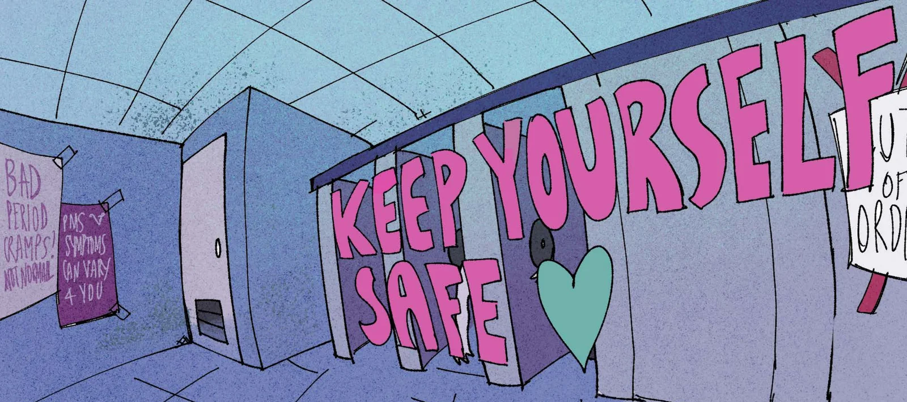
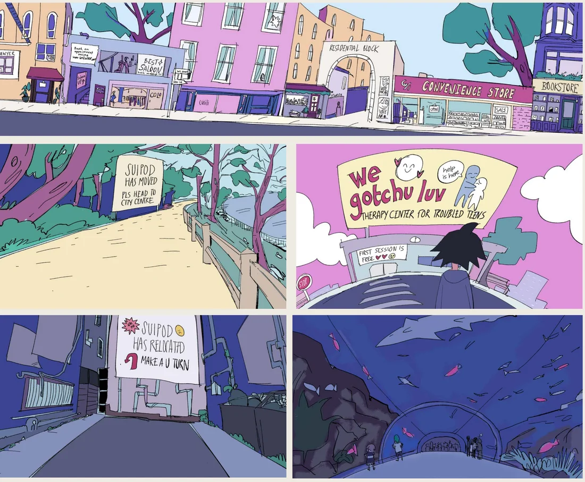
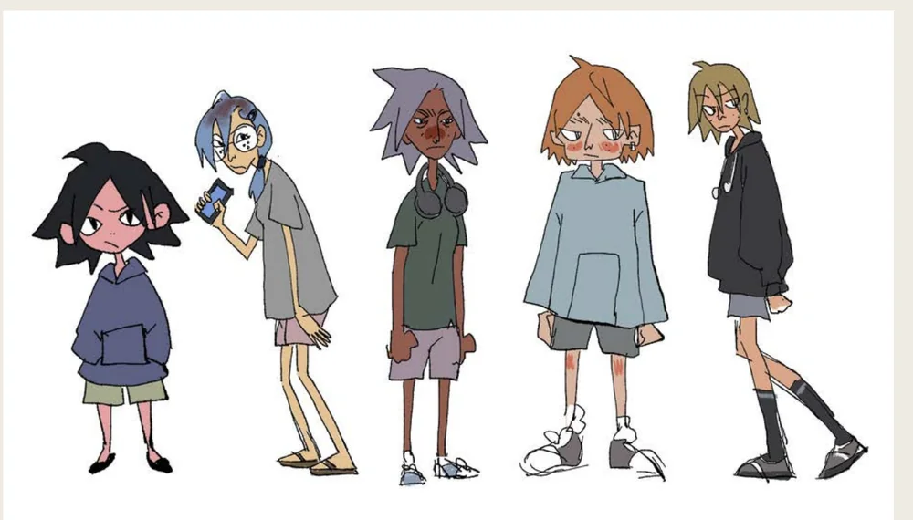
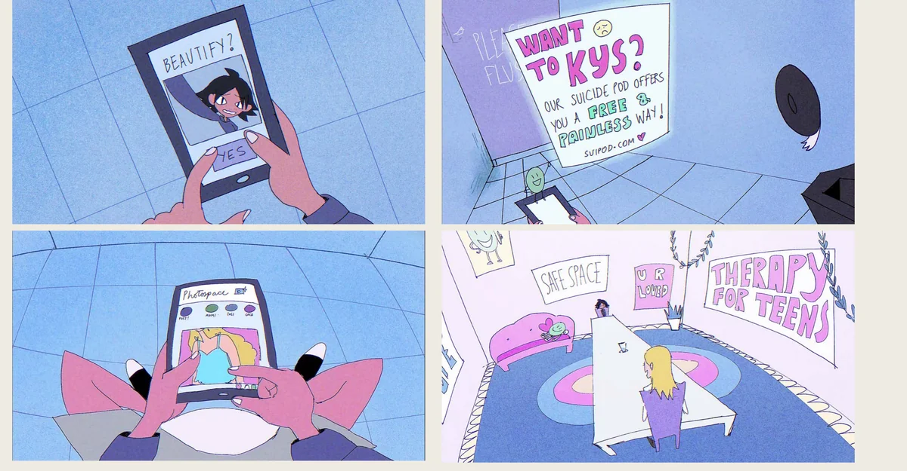
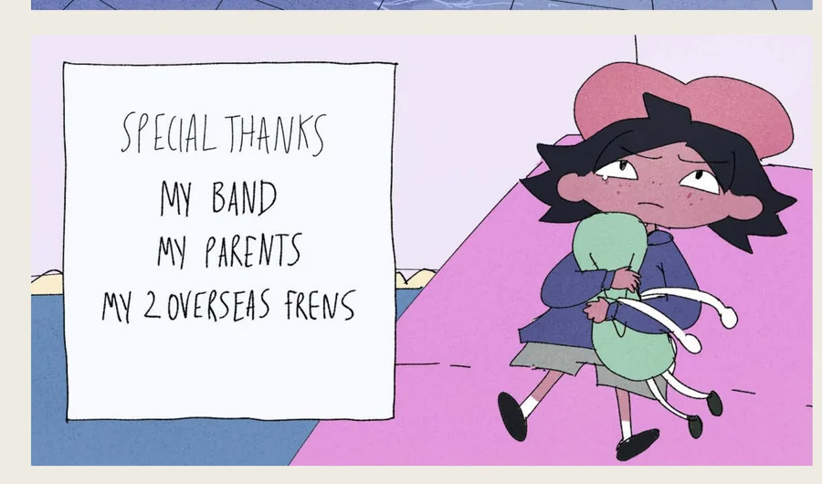
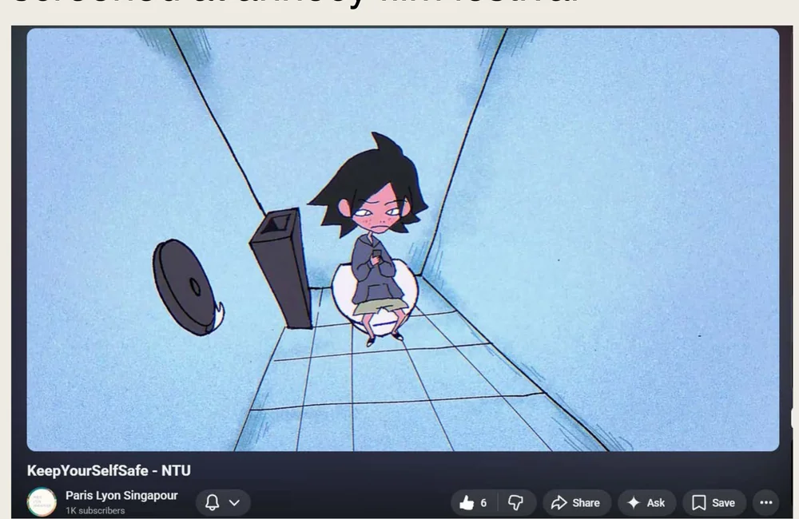

Lead project · Self-produced short film
Keep Yourself Safe
2D animated short · 2025
A short film about how casually the internet tells a teenage girl to hurt herself, and about the cheerful industry that turns up afterwards selling her the cure. Written, animated, sound-designed and produced solo, from the first background painting to the final mix, and selected for the Paris Lyon Singapore programme at Annecy 2025.
- Role
- Writing, animation, sound design, production
- Runtime
- 1 min 30 s, hand-drawn
- Made in
- Clip Studio Paint · Rough Animator
- Screened
- Annecy IAFF 2025, Paris Lyon Singapore

How it was built

01The world Shopfronts, signage and a therapy centre, built before a frame moved. 
02The cast Five silhouettes that had to read at a glance, drawn before anyone was animated. 
03The frames The joke and the dread carried by one flat, cheerful palette. 
04The last shot Credits thanking a band, two parents and two friends overseas. 
05Annecy Paris Lyon Singapore programme, Annecy IAFF 2025.